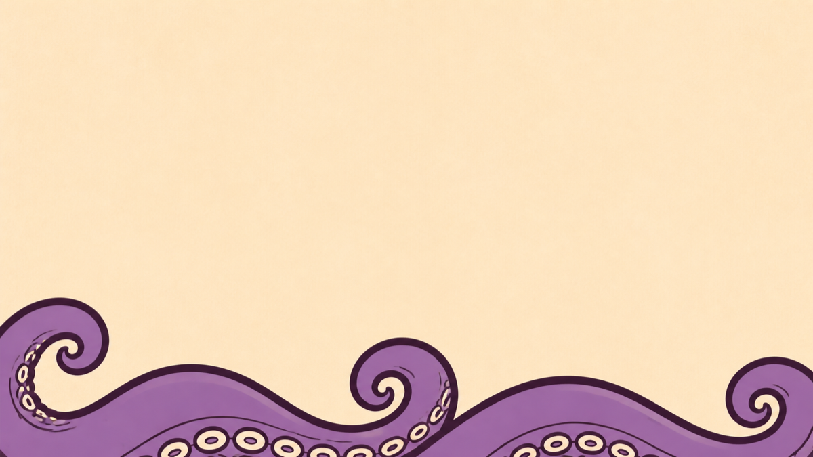
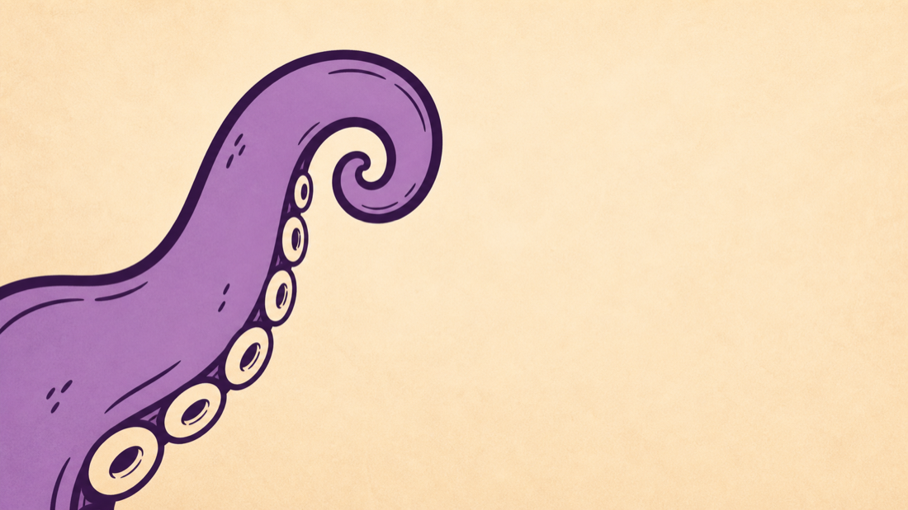

Stem Splitter · iOS · macOS · Web
Finally hear
what's under
the surface.
Drums
Bass
Vocals
Melody


MP3, WAV, AIFF, M4A. Whatever's in your files app. Stemacle does the separation on your phone. Nothing leaves your device. No account to make. No email to verify. Just the music.

Four separate tracks, individually playable, mutable, and loopable. Each with its own spectrogram so you can see exactly what you're hearing.
Set a 1/4, 1/2, or 1-measure loop on any stem independently. Solo the vocal melody you're trying to learn. Mute the guitar to hear the bass underneath. Build a version that's entirely yours.

Your audio never leaves your phone. The model runs locally. After the first download, Stemacle works offline: on a plane, in the studio, wherever.